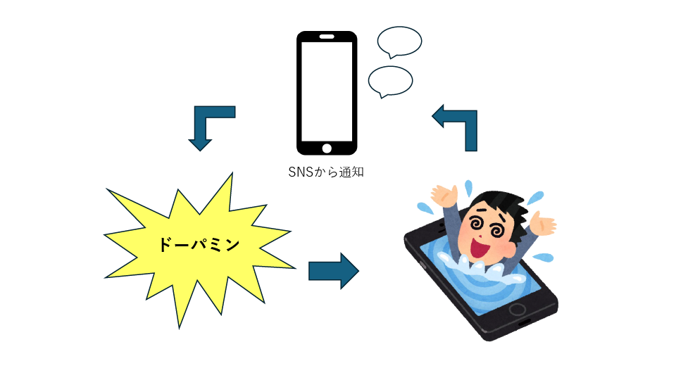
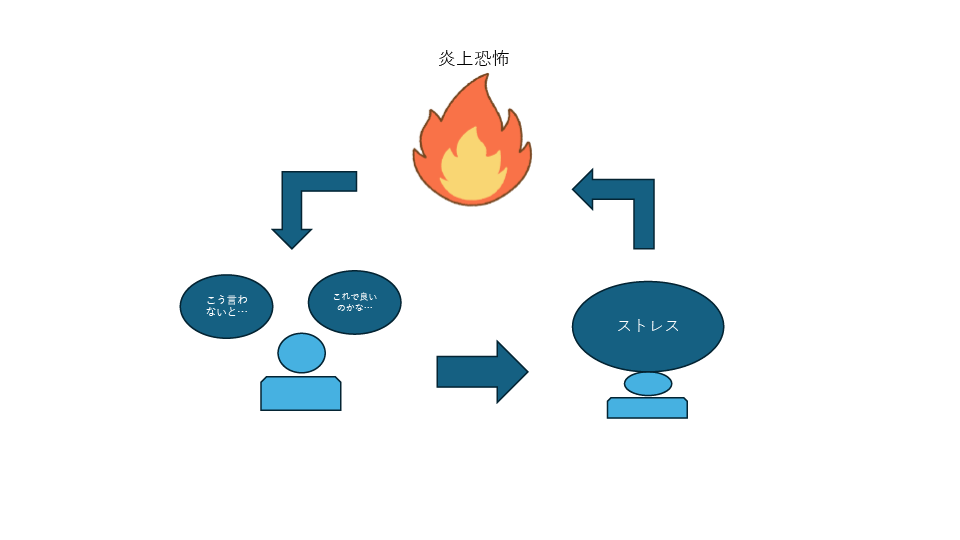

自己
スマートフォンを開き、無意識にSNSをチェックする。「いいね」の数を見て、つい他人と比べてしまう。 当たり前になったこの日常が、私たちの心に何を起こしているのか。 最新の研究を手がかりに、デジタル時代のメンタルヘルスについて考えます。
1. 見えない依存の実態
米国ピュー・リサーチ・センターの2023年調査によると、13-17歳の95％がSNSプラットフォームを利用しており、そのうち3分の2が毎日、3分の1が「ほぼ常に」使用しています。日本でも総務省の2024年情報通信白書で、10代のSNS利用時間が平日平均3時間を超えることが報告されています。
しかし、問題はその「量」だけではありません。より深刻なのは、私たちが無意識のうちにSNSを開いてしまう「習慣化」のメカニズムです。
神経科学の研究では、SNSの「いいね」や通知を受け取る度に、脳内でドーパミンという快い物質が分泌されるとされています。本来は食事など生きるための行動を後押しする仕組みですが、SNSはこの働きを上手く使っています。
特に「間欠強化」という仕組みがポイントです。報酬（いいねやコメント）がランダムなタイミングで返ってくると、チェック行動が強まりやすくなります。パチンコやギャンブルと似た動きが、私たちのスマホの中でも起きているわけです。

2. 承認欲求の病理学：「いいね」に支配される自己価値
SNSが精神健康に与える最も深刻な影響の一つが、自己価値の外部依存化です。従来、私たちの自己価値は内的な基準や身近な人々との関係性によって形成されていましたが、SNSの登場により、見知らぬ人々からの「承認」が自己価値を決定する重要な要因となりました。
ダイアナ・タミール氏らの研究では、自分について話すことで脳の報酬系が活性化することが明らかになっています。fMRI（機能的磁気共鳴画像法）を使った実験では、自分の考えや体験を他人に話すとき、食べ物や性的快楽を得るときと同じ脳領域が活動することが確認されました。
SNSはこの「自己開示の快楽」を極限まで増幅させる装置として機能しています。しかし、問題はその「報酬」が他者の反応に完全に依存していることです。
2019年にジョンズ・ホプキンス大学が発表した縦断研究では、6,595人の12-15歳を追跡調査した結果、SNS利用時間が長いほど、うつ病症状のリスクが13％増加することが判明しました。特に女子では、1日3時間以上の利用でリスクが26％も上昇することが明らかになっています。
あわせて、Primackら（2017）は若年成人を対象に、SNSの利用量が多いほど「社会的孤立感」を強く感じる傾向があると報告しています。量だけでなく、使い方や感じ方が心の状態に影響する点にも注意が必要です（参考文献参照）。
3. 比較社会の心理的コスト
社会心理学者レオン・フェスティンガーが1954年に提唱した「社会比較理論」によると、人間は自分の能力や意見を評価するために、他者との比較を行う本能的な傾向があります。しかし、SNS上での比較は、従来の現実世界での比較とは根本的に異なる性質を持っています。
「編集された現実」との比較
SNSに投稿される内容は、投稿者によって慎重に選択・加工されたものです。失敗や悩み、日常の些細な出来事は省略され、成功や幸福な瞬間だけが切り取られて表示されます。私たちは、自分の「ありのままの日常」と、他人の「ハイライト集」を比較してしまっているのです。
英国王立公衆衛生協会（RSPH）が2017年に発表した「#StatusOfMind」レポートでは、14-24歳の1,479人を対象にSNSプラットフォームの精神健康への影響を調査しました。
その結果、Instagram、Snapchat、Facebook、Twitterの順で精神健康に悪影響を与えることが明らかになり、特にInstagramは身体イメージ、睡眠の質、いじめ、FOMO（取り残される恐怖）の全ての項目で最も悪い評価を受けました。
4. 睡眠と認知機能への深刻な影響
SNSが精神健康に与える影響は、直接的な心理的ストレスだけではありません。睡眠パターンの変化や注意機能の低下といった、より基本的な変化も引き起こします。
ハーバード医学大学院の研究では、スマートフォンやタブレットからのブルーライトが睡眠ホルモン（メラトニン）の分泌を抑え、体内時計を2〜3時間遅らせる可能性が示されています。就寝前2時間以内のデバイス使用は、深い睡眠の質を下げやすいとされます。
日本体育大学の野井真吾教授らが2023年に発表した大規模調査では、東京都世田谷区の公立小中学校の8-15歳、34,643人を対象に電子メディア利用と精神健康の関係を調査しました。結果、平日2時間以上の利用でうつ症状のリスクが有意に上昇し、4時間以上では重篤なうつ症状のリスクが2.5倍に増加することが確認されました。
マルチタスキングによる認知機能の低下
スタンフォード大学のクリフォード・ナス教授らの研究では、頻繁にマルチタスキングを行う人は、集中力、記憶力、認知の柔軟性において、シングルタスクを好む人よりも著しく劣る結果を示しています。
特に注意すべきは、この認知機能の低下が一時的なものではないことです。ロンドン大学の神経科学者グレン・ウィルソン博士の研究では、メールやSNSの通知を気にしながら作業をする状態は、マリファナを使用した状態よりもIQを低下させることが報告されています。
5. 日本独自の文化的要因：「空気を読む」SNS文化
これらの世界共通の問題に加えて、日本のSNS利用には独特の文化的要因が存在します。
法政大学の藤代裕之教授らの研究によると、SNSなどで一度「炎上」が起きると、激しい非難が集中し、こうした炎上の恐怖や不安から、多くのユーザーが自己検閲するようになっています。その結果、自由な意見が言いにくくなる「発言の萎縮」が広がっているのが現状とされています。
東京大学の橋元良明教授らが実施した「情報通信メディアの利用時間と情報行動に関する調査」では、日本人のSNS利用は「受動的閲覧」の割合が他国と比較して高く、この受動的な利用パターンがうつ症状のリスクをより高めることが示唆されています。

6. 対策と回復：科学的アプローチによるデジタル・ウェルビーイング
では、これらの問題に対して、私たちはどのような対策を講じることができるのでしょうか。最新の研究は、いくつかの有効なアプローチを提示しています。
即座に実践できる5つのステップ：
1. 通知設定の見直し：重要でないアプリの通知をすべてオフにする
2. 就寝前ルール：就寝1時間前からデバイスを触らない
3. 朝のルーティン：起床後30分はSNSをチェックしない
4. 利用時間の可視化：Screen Time機能で自分の利用パターンを確認
5. アナログ時間の創出：週末は数時間のデジタル・デトックスを実施
まとめ：バランスの取れたデジタル・ライフに向けて
SNSと精神健康の関係は、単純な「善悪」で判断できるものではありません。重要なのは、SNSが私たちの脳と心に与える影響を科学的に理解し、意識的に利用することです。
データが示すのは明確な事実です。無制限で無意識的なSNS利用は、確実に私たちの精神的健康を蝕んでいます。しかし同時に、適切に利用すれば、SNSは人とのつながりを深め、自己表現の場を提供し、社会参加の機会を広げる強力なツールでもあります。
私たちに必要なのは、「デジタル・リテラシー」ならぬ「デジタル・ウィズダム（知恵）」です。それは、テクノロジーを使いこなす技術的能力だけでなく、いつ、なぜ、どのようにテクノロジーを使うべきかを判断する智慧なのです。
SNSという新しいメディアが登場してまだ20年足らず。私たちはまだ、この強力なツールとの健全な関係性を模索している途中です。しかし、科学的な知見に基づいた意識的な選択によって、SNSをより良い人生のパートナーにしていくことは可能なのです。
次章では、この精神的搾取が、いかに経済的搾取と結びついているか、「監視資本主義」の構造を明らかにしていきます。私たちの注意力と感情が、どのように商品化され、巨大な利益の源泉となっているのかを見ていきましょう。
参考文献
Hunt, M. G., Marx, R., Lipson, C., & Young, J. (2018). No more FOMO: Limiting social media decreases loneliness and depression. Journal of Social and Clinical Psychology, 37(10), 751-768.
Primack, B. A., Shensa, A., Sidani, J. E., Whaite, E. O., Lin, L. Y., Rosen, D., ... & Miller, E. (2017). Social media use and perceived social isolation among young adults in the US. American Journal of Preventive Medicine, 53(1), 1-8.
Turkle, S. (2011). Alone Together: Why We Expect More from Technology and Less from Each Other. New York: Basic Books.
総務省 (2024). 「令和6年版 情報通信白書」東京：総務省
クリフォード・ナス 「スタンフォード大学の研究成果」、2009年
グレン・ウィルソン Mecha AG「マルチタスクによってIQが低下するか」、2010年
藤代裕之 「フェイクニュースの生態系」「ソーシャルメディア論・改訂版 つながりを再設計する」
橋元良明「令和6年度情報通信メディアの利用時間と情報行動に関する調査報告書」、2025年
メリッサ・G・ハント No More FOMO: Limiting Social Media Decreases Loneliness and Depression
Sherry Turkle 「RECLAIMING CONVERSATION」 Books